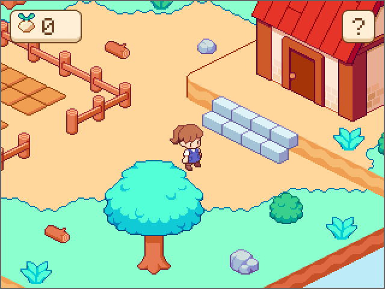
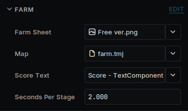

이 가이드는 아직 번역되지 않았습니다.
A tiny farm. Walk around the island, plant turnips and watch them grow. Pick the ripe ones into a tower on the farmer's head, then carry it up the steps to the house to sell. It plays with a keyboard, a handheld's buttons or taps, and a help button says what to do and shows the controls for whichever the player uses.

The finished game
Art: Simple Cozy - Farm Asset Pack by Aibyzz.
It starts from a new project: see Getting started. The Inspector shows sizes in pixels and code uses meters, with 16 pixels to the meter by default: see Units.
Get the art and the island
The art is Simple Cozy - Farm Asset Pack by Aibyzz. Download the free version and unpack it. Deki does not include it, because its licence does not allow sharing the files. You can use it in your own games, commercial ones too.
The island is a Tiled map, ready to use, in first-game-files.zip. The zip also holds the map's eight tilesets, the HUD's icons and panel and the monogram pixel font. The ground is painted on tile layers, steps included, and everything that stands on it, from the fences to the house, is a tile object on the scenery layer. So is the top of the raised ground's back edge, a second time, so it can be drawn over the farmer and cover her feet when she walks behind it. The tiles are whole blocks whose sides the next tiles hide, so the edge is made of strips 8 pixels tall from the same sheet: the raised_edge_back and raised_edge_front tilesets cut it that way, each drawing its strip that far above its point, so every strip stands on its tile's front corner. The front corner's cliff is there too, as the left half of its tile, from the raised_edge_corner tileset, and the rest of that tile's top as a quarter from raised_edge_quarter.
The collision layer is for the game, not to be seen. It says what is in the way, drawn over the pictures: an ellipse round the foot of each rock, bush, log and tree, and a line along each fence's posts. Three rectangles there have a class: Steps marks where the steps climb, the house's Wall keeps the farmer out of the house, and Door is the ground in front of the door, where turnips are sold. Tiled has no levels, so whatever stands on the raised ground has a custom property, level, set to 1.
- Open View → Package Manager and install Tiled Map Editor Integration.
- Unpack the zip into your project's assets folder. It makes the folders tilemaps, hud and fonts there.
- From the art pack, copy Farm/Free ver.png, Farm/Objects.png and Farm/House.png into assets/tilemaps. The tilesets look for them there.
- Drag Player/FPlayer 1 idle.png and Player/FPlayer 1 walking.png onto the Asset Browser.
- Select monogram in the Asset Browser and set its Hinting Mode to Mono (1-bit, no AA). A pixel font then draws crisp, with no smoothed edges, like the art around it. It is drawn for size 16: one of its pixels to one on the screen.
The scene
The island is bigger than the screen, so the camera follows the farmer.
- Delete Sky.
- On Camera, set Clear Color to #BDE8F0 and turn on Pixel Perfect. The art is then scaled by whole numbers only, so on a screen bigger than the game every pixel of it is the same size.
- Make an empty object called Map at 0, 8. Add a Tilemap Component and set its Tilemap to farm. Then add a Tilemap Object Spawner, set its Tilemap to farm, Sort Base to 1000 and Sort Per Meter to 16, one order for each pixel row. The spawner is what turns the scenery layer into sprites when the game starts.
- Make an empty object called Tap Area, drag it onto Camera and add an Input Collider with Width 640 and Height 480. It covers the screen, and a wider one too, so every tap or click lands on it.
- Make two empty objects, Farm and Farmer. Set the Farmer's position to 40, -16 and add a Sprite Component to it. Leave its Sprite empty: the code sets it.
The farm
The map holds the island, so this script is only the game: where the soil is, how the turnips grow, the score, where the farmer can walk and the way from one spot to another. Create a script called Farm.
src/Farm.h:
#pragma once
#include <deki/Engine.h>
#include <deki/assets/AssetRef.h>
#include <deki/providers/Buffer.h>
#include <deki/reflection/ObjectRef.h>
#include <cmath>
#include "SpriteBatchComponent.h"
#include "SpriteComponent.h"
#include "Tilemap.h"
#include "TextComponent.h"
DEKI_CATEGORY("Game")
DEKI_DESCRIPTION("Grows the turnips, counts the ones sold and says where the farmer can walk.")
class Farm : public Deki::Component
{
public:
DEKI_EXPORT
Deki::AssetRef<Deki2D::Sprite> farmSheet;
DEKI_EXPORT
Deki::AssetRef<DekiTiledMap::Tilemap> map;
DEKI_EXPORT
Deki::ObjectRef<Deki2D::TextComponent> scoreText;
DEKI_EXPORT
float secondsPerStage = 2.0f;
void Start() override;
void Update() override;
float GroundHeight(float x, float y, float clearance = 0.0f) const;
bool FindWay(float fromX, float fromY, float x, float y);
bool NextPoint(float fromX, float fromY, float& outX, float& outY) const;
bool UseSoil(float x, float y, bool canCarry);
bool IsAtDoor(float x, float y) const;
void Sell();
bool IsSoil(float x, float y) const;
static int DrawOrder(float y) { return 1000 - static_cast<int>(std::floor(y * 16.0f)); }
int DrawOrderAt(float x, float feet, float height) const;
private:
struct Thing
{
enum Kind : uint8_t
{
Round,
Fence,
Wall,
Steps,
Door,
};
float column = 0.0f;
float row = 0.0f;
float columns = 0.0f;
float rows = 0.0f;
uint32_t firstPoint = 0;
uint32_t points = 0;
int level = 0;
Kind kind = Wall;
bool Holds(float c, float r) const
{
return c >= column && c <= column + columns && r >= row && r <= row + rows;
}
};
struct Patch
{
float x = 0.0f;
float y = 0.0f;
uint32_t soil = 0;
uint32_t crop = 0;
int stage = -1;
float age = 0.0f;
};
void ReadMap();
void FindWays();
float LevelAt(float column, float row) const;
bool InTheWay(const Thing& thing, float column, float row, float clearance) const;
bool CanWalk(float fromX, float fromY, float toX, float toY, float clearance = 0.0f) const;
void AlongTheSquares(float fromX, float fromY, float& toX, float& toY) const;
void Flood(int from);
void Show(Patch& patch);
void ShowScore();
Patch m_Patches[20];
Deki2D::SpriteBatchComponent* m_Soil = nullptr;
Deki2D::SpriteBatchComponent* m_Crops = nullptr;
int m_Score = 0;
Deki::Buffer<Thing> m_Things;
Deki::Buffer<float> m_FencePoints;
Deki::Buffer<uint8_t> m_Ways;
Deki::Buffer<uint16_t> m_Steps;
Deki::Buffer<uint16_t> m_Queue;
float m_GoalX = 0.0f;
float m_GoalY = 0.0f;
};
src/Farm.cpp:
#include "Farm.h"
#include <algorithm>
#include <cmath>
#include <cstdio>
#include <cstring>
namespace
{
const int kIslandSize = 24;
const int kSquares = kIslandSize * kIslandSize;
const float kIslandTop = 12.0f;
const float kRaisedColumn = 11.5f;
const float kRaisedRow = 9.5f;
const float kFeetHalfWidth = 0.3f;
const float kEdgePieces = kRaisedColumn + 1.0f;
const float kEdgePieceHalfWidth = 1.0f;
const float kFenceHalfWidth = 0.22f;
const float kFarmerHalfWidth = 0.6f;
const float kPieceHalfWidth = 1.0f;
const float kPieceBelowLine = 0.5f;
const float kPictureBelowFoot = 0.25f;
const float kRoofOverhang = 1.0f;
const int kAround[8][2] = { { 1, 0 }, { 1, 1 }, { 0, 1 }, { -1, 1 }, { -1, 0 }, { -1, -1 }, { 0, -1 }, { 1, -1 } };
const uint16_t kNoWay = 0xFFFF;
const float kSameSpot = 0.01f;
const float kClearance = 0.1f;
const float kAligned = 0.01f;
const int kLookAhead = 12;
const float kMapUnitsPerSquare = 16.0f;
const float kMapMargin = 1.5f;
float WorldX(float column, float row)
{
return column - row;
}
float WorldY(float column, float row)
{
return kIslandTop - (column + row) * 0.5f;
}
float ColumnAt(float x, float y)
{
return kIslandTop - y + x * 0.5f;
}
float RowAt(float x, float y)
{
return kIslandTop - y - x * 0.5f;
}
bool IsOnIsland(int column, int row)
{
return column >= 0 && row >= 0 && column < kIslandSize && row < kIslandSize;
}
float Squares(float fromX, float fromY, float toX, float toY)
{
return std::hypot(toX - fromX, (toY - fromY) * 2.0f) / 1.41f;
}
bool IsA(const DekiTiledMap::DTilemapObject& object, const char* type)
{
return std::strncmp(object.type, type, sizeof(object.type)) == 0;
}
float DistanceToLine(float x, float y, float fromX, float fromY, float toX, float toY)
{
const float alongX = toX - fromX;
const float alongY = toY - fromY;
const float length = alongX * alongX + alongY * alongY;
float part = length > 0.0f ? ((x - fromX) * alongX + (y - fromY) * alongY) / length : 0.0f;
part = std::fmin(1.0f, std::fmax(0.0f, part));
return std::hypot(x - fromX - alongX * part, y - fromY - alongY * part);
}
float HeightAlong(float fromX, float fromY, float toX, float toY, float x)
{
if (toX == fromX)
{
return std::fmax(fromY, toY);
}
const float part = std::fmin(1.0f, std::fmax(0.0f, (x - fromX) / (toX - fromX)));
return fromY + (toY - fromY) * part;
}
struct Between
{
int over = 0;
int under = 0x7FFFFFFF;
};
void SortBySide(float x, float fromX, float fromY, float toX, float toY, float reach, float below, bool inFront,
Between& order)
{
if (std::fmax(fromX, toX) < x - reach || std::fmin(fromX, toX) > x + reach)
{
return;
}
const float left = HeightAlong(fromX, fromY, toX, toY, x - reach);
const float right = HeightAlong(fromX, fromY, toX, toY, x + reach);
if (inFront)
{
order.over = std::max(order.over, Farm::DrawOrder(std::fmin(left, right) - below) + 1);
}
else
{
order.under = std::min(order.under, Farm::DrawOrder(std::fmax(left, right)) - 1);
}
}
void SortAgainstLine(float x, float feet, float fromX, float fromY, float toX, float toY, float reach, float below,
Between& order)
{
const float here = HeightAlong(fromX, fromY, toX, toY, x);
if (feet < here || feet < here + reach)
{
SortBySide(x, fromX, fromY, toX, toY, reach, below, feet < here, order);
}
}
}
void Farm::ReadMap()
{
const DekiTiledMap::Tilemap& tilemap = *map.Get();
const auto& objects = tilemap.Objects();
const auto& points = tilemap.PolygonPoints();
size_t count = 0;
for (const DekiTiledMap::DTilemapObject& object : objects)
{
count += object.gid == 0 ? 1 : 0;
}
if (!m_Things.Allocate(count, Deki::Memory::External) ||
!m_FencePoints.Allocate(points.size(), Deki::Memory::External))
{
return;
}
size_t next = 0;
for (const DekiTiledMap::DTilemapObject& object : objects)
{
if (object.gid != 0)
{
continue;
}
const DekiTiledMap::DTilemapProperty* level = tilemap.FindProperty(object, "level");
Thing thing;
thing.level = level ? level->intValue : 0;
thing.column = object.x / kMapUnitsPerSquare - kMapMargin + thing.level;
thing.row = object.y / kMapUnitsPerSquare - kMapMargin + thing.level;
thing.columns = object.width / kMapUnitsPerSquare;
thing.rows = object.height / kMapUnitsPerSquare;
const auto shape = static_cast<DekiTiledMap::DObjectShape>(object.shape);
thing.kind = IsA(object, "Steps") ? Thing::Steps
: IsA(object, "Door") ? Thing::Door
: shape == DekiTiledMap::DObjectShape::Ellipse ? Thing::Round
: shape == DekiTiledMap::DObjectShape::Polyline ? Thing::Fence
: Thing::Wall;
thing.firstPoint = object.pointOffset;
thing.points = object.pointCount;
for (uint32_t point = object.pointOffset; point < object.pointOffset + object.pointCount; ++point)
{
m_FencePoints[point * 2] = thing.column + points[point * 2] / kMapUnitsPerSquare;
m_FencePoints[point * 2 + 1] = thing.row + points[point * 2 + 1] / kMapUnitsPerSquare;
}
m_Things[next++] = thing;
}
}
void Farm::FindWays()
{
if (!m_Ways.Allocate(kSquares, Deki::Memory::External) || !m_Steps.Allocate(kSquares, Deki::Memory::External) ||
!m_Queue.Allocate(kSquares, Deki::Memory::External))
{
m_Ways.Reset();
return;
}
std::memset(m_Ways.Data(), 0, kSquares);
for (int row = 0; row < kIslandSize; ++row)
{
for (int column = 0; column < kIslandSize; ++column)
{
for (int way = 0; way < 4; ++way)
{
const int nextColumn = column + kAround[way][0];
const int nextRow = row + kAround[way][1];
if (IsOnIsland(nextColumn, nextRow) &&
CanWalk(WorldX(column, row), WorldY(column, row), WorldX(nextColumn, nextRow),
WorldY(nextColumn, nextRow)))
{
uint8_t& there = m_Ways[row * kIslandSize + column];
uint8_t& back = m_Ways[nextRow * kIslandSize + nextColumn];
there = static_cast<uint8_t>(there | (1 << way));
back = static_cast<uint8_t>(back | (1 << (way + 4)));
}
}
}
}
}
void Farm::Start()
{
ReadMap();
FindWays();
Deki2D::Sprite* farm = farmSheet.Get();
Deki::Object* beds = GetOwner()->GetOwnerScene()->CreateDekiObject("Beds");
beds->SetWorldPosition(0.0f, 0.0f);
m_Soil = beds->AddComponent<Deki2D::SpriteBatchComponent>();
m_Soil->sprite = farm;
m_Crops = beds->GetOwnerScene()->CreateDekiObject("Crops")->AddComponent<Deki2D::SpriteBatchComponent>();
m_Crops->sprite = farm;
int next = 0;
for (int row : { 13, 14, 16, 17 })
{
for (int column = 4; column <= 8; ++column)
{
Patch& patch = m_Patches[next++];
patch.x = WorldX(column, row);
patch.y = WorldY(column, row);
patch.soil = static_cast<uint32_t>(m_Soil->Add(patch.x, patch.y + 0.5f, 128, 0, 32, 32, 100));
patch.crop =
static_cast<uint32_t>(m_Crops->Add(patch.x, patch.y + 0.5f, 0, 96, 32, 32, DrawOrder(patch.y - 0.5f)));
m_Crops->SetVisible(patch.crop, false);
}
}
ShowScore();
}
void Farm::Update()
{
const float seconds = Deki::Time::GetDeltaTimeF() * 0.001f;
for (Patch& patch : m_Patches)
{
if (patch.stage < 0 || patch.stage == 3)
{
continue;
}
patch.age += seconds;
if (patch.age >= secondsPerStage)
{
patch.age = 0.0f;
++patch.stage;
Show(patch);
}
}
}
float Farm::LevelAt(float column, float row) const
{
const float last = kIslandSize - 0.5f;
if (column < -0.5f || row < -0.5f || column > last || row > last)
{
return -1.0f;
}
float height = column > kRaisedColumn && row < kRaisedRow ? 1.0f : 0.0f;
for (size_t index = 0; index < m_Things.Count(); ++index)
{
const Thing& thing = m_Things[index];
if (thing.kind == Thing::Steps && thing.Holds(column, row))
{
height = (thing.row + thing.rows - row) / thing.rows;
}
}
return height;
}
float Farm::GroundHeight(float x, float y, float clearance) const
{
const float column = ColumnAt(x, y);
const float row = RowAt(x, y);
const float height = LevelAt(column, row);
if (height < 0.0f)
{
return -1.0f;
}
for (float side : { -kFeetHalfWidth, kFeetHalfWidth })
{
const float there = LevelAt(column + side, row - side);
if (there < 0.0f || std::fabs(there - height) >= 0.5f)
{
return -1.0f;
}
}
const int level = height < 0.5f ? 0 : 1;
for (size_t index = 0; index < m_Things.Count(); ++index)
{
const Thing& thing = m_Things[index];
if (thing.level == level && InTheWay(thing, column, row, clearance))
{
return -1.0f;
}
}
return height;
}
bool Farm::InTheWay(const Thing& thing, float column, float row, float clearance) const
{
switch (thing.kind)
{
case Thing::Wall:
for (float side : { -kFeetHalfWidth, 0.0f, kFeetHalfWidth })
{
if (column + side >= thing.column - clearance &&
column + side <= thing.column + thing.columns + clearance && row - side >= thing.row - clearance &&
row - side <= thing.row + thing.rows + clearance)
{
return true;
}
}
return false;
case Thing::Round:
{
const float across = thing.columns * 0.5f + clearance;
const float down = thing.rows * 0.5f + clearance;
const float columns = (column - thing.column - thing.columns * 0.5f) / across;
const float rows = (row - thing.row - thing.rows * 0.5f) / down;
return columns * columns + rows * rows < 1.0f;
}
case Thing::Fence:
for (uint32_t point = thing.firstPoint + 1; point < thing.firstPoint + thing.points; ++point)
{
const float* from = &m_FencePoints[(point - 1) * 2];
if (DistanceToLine(column, row, from[0], from[1], from[2], from[3]) < kFenceHalfWidth + clearance)
{
return true;
}
}
return false;
default: return false;
}
}
int Farm::DrawOrderAt(float x, float feet, float height) const
{
Between order;
const int level = height < 0.5f ? 0 : 1;
for (size_t index = 0; index < m_Things.Count(); ++index)
{
const Thing& thing = m_Things[index];
if (thing.level != level)
{
continue;
}
if (thing.kind == Thing::Round)
{
const float across = thing.columns * 0.5f;
const float down = thing.rows * 0.5f;
const float shorter = std::fmin(across, down);
const float middleColumn = thing.column + across;
const float middleRow = thing.row + down;
const float fromColumn = middleColumn - (across - shorter);
const float fromRow = middleRow - (down - shorter);
const float toColumn = middleColumn + (across - shorter);
const float toRow = middleRow + (down - shorter);
const float size = std::hypot(across, down);
SortAgainstLine(x, feet, WorldX(fromColumn, fromRow), WorldY(fromColumn, fromRow) + thing.level,
WorldX(toColumn, toRow), WorldY(toColumn, toRow) + thing.level, kFarmerHalfWidth + size,
size * 0.5f + kPictureBelowFoot, order);
}
else if (thing.kind == Thing::Fence)
{
for (uint32_t point = thing.firstPoint + 1; point < thing.firstPoint + thing.points; ++point)
{
const float* from = &m_FencePoints[(point - 1) * 2];
SortAgainstLine(x, feet, WorldX(from[0], from[1]), WorldY(from[0], from[1]) + thing.level,
WorldX(from[2], from[3]), WorldY(from[2], from[3]) + thing.level,
kFarmerHalfWidth + kPieceHalfWidth, kPieceBelowLine, order);
}
}
else if (thing.kind == Thing::Wall)
{
const float left = WorldX(thing.column, thing.row + thing.rows) - kRoofOverhang;
const float right = WorldX(thing.column + thing.columns, thing.row) + kRoofOverhang;
if (left > x + kFarmerHalfWidth || right < x - kFarmerHalfWidth)
{
continue;
}
const float column = ColumnAt(x, feet - thing.level);
const float row = RowAt(x, feet - thing.level);
const float lastColumn = thing.column + thing.columns;
const float lastRow = thing.row + thing.rows;
const bool besideLeft = column < thing.column && row < lastRow + kFeetHalfWidth;
const bool besideRight = row < thing.row && column < lastColumn + kFeetHalfWidth;
if ((column > lastColumn || row > lastRow) && !besideLeft && !besideRight)
{
const float front = WorldY(thing.column + thing.columns, thing.row + thing.rows) + thing.level;
order.over = std::max(order.over, DrawOrder(front) + 1);
}
else
{
order.under = std::min(order.under, DrawOrder(WorldY(thing.column, thing.row) + thing.level) - 1);
}
}
}
const float column = ColumnAt(x, feet - height);
const float row = RowAt(x, feet - height);
const bool behind = level == 0 && column < kRaisedColumn && row < kRaisedRow + kFeetHalfWidth;
SortBySide(x, WorldX(kEdgePieces, 0.0f), WorldY(kEdgePieces, 0.0f), WorldX(kEdgePieces, kRaisedRow),
WorldY(kEdgePieces, kRaisedRow), kFarmerHalfWidth + kEdgePieceHalfWidth, 0.0f, !behind, order);
return std::max(std::min(DrawOrder(feet - 0.5f), order.under), order.over);
}
bool Farm::CanWalk(float fromX, float fromY, float toX, float toY, float clearance) const
{
const int looks = 1 + static_cast<int>(Squares(fromX, fromY, toX, toY) * 6.0f);
float height = GroundHeight(fromX, fromY);
for (int look = 1; look <= looks && height >= 0.0f; ++look)
{
const float part = static_cast<float>(look) / looks;
const float next = GroundHeight(fromX + (toX - fromX) * part, fromY + (toY - fromY) * part, clearance);
if (next < 0.0f || std::fabs(next - height) >= 0.5f)
{
return false;
}
height = next;
}
return height >= 0.0f;
}
void Farm::Flood(int from)
{
for (int square = 0; square < kSquares; ++square)
{
m_Steps[square] = kNoWay;
}
int first = 0;
int count = 0;
m_Steps[from] = 0;
m_Queue[count++] = static_cast<uint16_t>(from);
while (first < count)
{
const int square = m_Queue[first++];
for (int way = 0; way < 8; ++way)
{
const int next = square + kAround[way][0] + kAround[way][1] * kIslandSize;
if ((m_Ways[square] & (1 << way)) && m_Steps[next] == kNoWay)
{
m_Steps[next] = static_cast<uint16_t>(m_Steps[square] + 1);
m_Queue[count++] = static_cast<uint16_t>(next);
}
}
}
}
bool Farm::FindWay(float fromX, float fromY, float x, float y)
{
if (!m_Ways)
{
return false;
}
const int column = static_cast<int>(std::floor(ColumnAt(fromX, fromY) + 0.5f));
const int row = static_cast<int>(std::floor(RowAt(fromX, fromY) + 0.5f));
int start = -1;
float nearest = 0.0f;
for (int nextRow = row - 1; nextRow <= row + 1; ++nextRow)
{
for (int nextColumn = column - 1; nextColumn <= column + 1; ++nextColumn)
{
const float middleX = WorldX(nextColumn, nextRow);
const float middleY = WorldY(nextColumn, nextRow);
const float distance = Squares(fromX, fromY, middleX, middleY);
if (IsOnIsland(nextColumn, nextRow) && (start < 0 || distance < nearest) &&
CanWalk(fromX, fromY, middleX, middleY))
{
start = nextRow * kIslandSize + nextColumn;
nearest = distance;
}
}
}
if (start < 0)
{
return false;
}
Flood(start);
int goal = -1;
for (int square = 0; square < kSquares; ++square)
{
const float middleX = WorldX(square % kIslandSize, square / kIslandSize);
const float middleY = WorldY(square % kIslandSize, square / kIslandSize);
const float distance = Squares(x, y, middleX, middleY);
if (m_Steps[square] != kNoWay && (goal < 0 || distance < nearest))
{
goal = square;
nearest = distance;
}
}
Flood(goal);
m_GoalX = WorldX(goal % kIslandSize, goal / kIslandSize);
m_GoalY = WorldY(goal % kIslandSize, goal / kIslandSize);
if (CanWalk(m_GoalX, m_GoalY, x, y))
{
m_GoalX = x;
m_GoalY = y;
}
return true;
}
bool Farm::NextPoint(float fromX, float fromY, float& outX, float& outY) const
{
if (Squares(fromX, fromY, m_GoalX, m_GoalY) < kSameSpot)
{
return false;
}
const int column = static_cast<int>(std::floor(ColumnAt(fromX, fromY) + 0.5f));
const int row = static_cast<int>(std::floor(RowAt(fromX, fromY) + 0.5f));
const bool inGoalSquare = IsOnIsland(column, row) && m_Steps[row * kIslandSize + column] == 0;
if (CanWalk(fromX, fromY, m_GoalX, m_GoalY, kClearance) ||
(inGoalSquare && CanWalk(fromX, fromY, m_GoalX, m_GoalY)))
{
outX = m_GoalX;
outY = m_GoalY;
AlongTheSquares(fromX, fromY, outX, outY);
return true;
}
int best = -1;
for (int nextRow = row - 1; nextRow <= row + 1; ++nextRow)
{
for (int nextColumn = column - 1; nextColumn <= column + 1; ++nextColumn)
{
if (!IsOnIsland(nextColumn, nextRow))
{
continue;
}
const int square = nextRow * kIslandSize + nextColumn;
const float middleX = WorldX(nextColumn, nextRow);
const float middleY = WorldY(nextColumn, nextRow);
if ((best < 0 || m_Steps[square] < m_Steps[best]) && m_Steps[square] != kNoWay &&
Squares(fromX, fromY, middleX, middleY) >= kSameSpot && CanWalk(fromX, fromY, middleX, middleY))
{
best = square;
}
}
}
if (best < 0)
{
return false;
}
for (int look = 0; look < kLookAhead; ++look)
{
int nearer = -1;
float nearest = 0.0f;
for (int way = 0; way < 8; ++way)
{
const int next = best + kAround[way][0] + kAround[way][1] * kIslandSize;
if (!(m_Ways[best] & (1 << way)) || m_Steps[next] + 1 != m_Steps[best])
{
continue;
}
const float distance = Squares(WorldX(next % kIslandSize, next / kIslandSize),
WorldY(next % kIslandSize, next / kIslandSize), m_GoalX, m_GoalY);
if (nearer < 0 || distance < nearest)
{
nearer = next;
nearest = distance;
}
}
if (nearer < 0 || !CanWalk(fromX, fromY, WorldX(nearer % kIslandSize, nearer / kIslandSize),
WorldY(nearer % kIslandSize, nearer / kIslandSize), kClearance))
{
break;
}
best = nearer;
}
outX = WorldX(best % kIslandSize, best / kIslandSize);
outY = WorldY(best % kIslandSize, best / kIslandSize);
AlongTheSquares(fromX, fromY, outX, outY);
return true;
}
void Farm::AlongTheSquares(float fromX, float fromY, float& toX, float& toY) const
{
const float dx = toX - fromX;
const float dy = toY - fromY;
if (std::fabs(std::fabs(dx) - std::fabs(dy) * 2.0f) < kAligned)
{
return;
}
const float upRight = (dx * 0.5f + dy) * 0.5f;
const float downRight = (dx * 0.5f - dy) * 0.5f;
const float corners[2][2] = { { fromX + upRight * 2.0f, fromY + upRight },
{ fromX + downRight * 2.0f, fromY - downRight } };
for (const auto& corner : corners)
{
if (CanWalk(fromX, fromY, corner[0], corner[1]) && CanWalk(corner[0], corner[1], toX, toY))
{
toX = corner[0];
toY = corner[1];
return;
}
}
}
bool Farm::IsSoil(float x, float y) const
{
for (const Patch& patch : m_Patches)
{
if (std::hypot(patch.x - x, (patch.y - y) * 2.0f) < 1.0f)
{
return true;
}
}
return false;
}
bool Farm::IsAtDoor(float x, float y) const
{
for (size_t index = 0; index < m_Things.Count(); ++index)
{
if (m_Things[index].kind == Thing::Door && m_Things[index].Holds(ColumnAt(x, y), RowAt(x, y)))
{
return true;
}
}
return false;
}
void Farm::Sell()
{
++m_Score;
ShowScore();
}
bool Farm::UseSoil(float x, float y, bool canCarry)
{
Patch* nearest = nullptr;
float best = 1.4f;
for (Patch& patch : m_Patches)
{
const float distance = std::hypot(patch.x - x, (patch.y - y) * 2.0f);
if (distance < best)
{
best = distance;
nearest = &patch;
}
}
if (!nearest)
{
return false;
}
if (nearest->stage < 0)
{
nearest->stage = 0;
nearest->age = 0.0f;
}
else if (nearest->stage == 3 && canCarry)
{
nearest->stage = -1;
Show(*nearest);
return true;
}
Show(*nearest);
return false;
}
void Farm::Show(Patch& patch)
{
m_Soil->SetFrameRect(patch.soil, 128, patch.stage < 0 ? 0 : 32, 32, 32);
m_Crops->SetVisible(patch.crop, patch.stage >= 0);
if (patch.stage >= 0)
{
m_Crops->SetFrameRect(patch.crop, patch.stage * 32, 96, 32, 32);
}
}
void Farm::ShowScore()
{
char line[24];
std::snprintf(line, sizeof(line), "%d", m_Score);
scoreText.Get()->SetText(line);
}
The soil and the turnips are pieces of two Sprite Batch components. Add places a rectangle of the sheet, so nothing needs cutting up first, and returns the piece's number. SetFrameRect and SetVisible change that piece later. Twenty patches are two objects where they would be forty, which a small device feels, and each piece still sorts on its own: the farmer walks in front of one turnip and behind the next.
A column and a row name a square on the island: columns run down and to the right, rows down and to the left. WorldX and WorldY turn them into a position, and ColumnAt and RowAt do the reverse. ReadMap reads the collision layer's shapes once, with FindProperty for each one's level, and leaves the tile objects, the pictures, to the spawner. GroundHeight says how high the ground is at a point: 0 on the lower ground, 1 on the raised ground and in between on the steps. It keeps the farmer on the island and out of everything on her level: a Wall over its whole area, a rock or a tree inside its ellipse, a fence along its line. Her feet have a width, kFeetHalfWidth to each side across the screen, and all of it has to stand on the same ground: so no part of her is inside the cliff or a wall, and on the raised ground she stops before her feet hang over its edge. Behind the raised ground she walks right up to its back wall, where its edge covers her feet, so she looks to stand below it.
A tap can be on the other side of a fence, so the farm finds the way round. FindWays works out once, at the start, which squares can be walked between: CanWalk tries the straight line from the middle of one to the middle of the next with GroundHeight, so whatever stops the farmer stops the way too, and the steps are the only way up. Flood then spreads from one square to all it can reach, a square further each round, and every square learns how many squares away it is. FindWay floods twice: from the farmer, to find the square nearest the tap that she can reach at all, and from that square, so that walking to any square with a smaller number leads there. NextPoint hands the way out a point at a time: the goal itself when the line there is clear, otherwise the middle of a square. It starts from the best square beside her and looks on along the way, a square nearer the goal each time, for as long as she could still walk straight there with a little room to spare. So she walks in long straight lines and turns only where something is in the way. AlongTheSquares then lays a line the keys could not walk as two they can, one along each way of the squares, when nothing is in the way of either, so a tapped walk moves in the same whole-pixel steps as the keys.
UseSoil plants on an empty patch and picks a ripe turnip, when the farmer says she has room for one more. The count on screen is of turnips sold: IsAtDoor says when she stands on the map's Door area, and Sell counts one.
DrawOrder is what makes the farmer walk behind the trees and in front of the turnips: lower on the screen draws on top. It matches the spawner's Sort Base and Sort Per Meter, so the farmer and the scenery sort together. The spawner sorts a tile object by its point. The house's point is inside its walls, and its tileset's Tile Offset draws the picture from there. A fence, a log or the house is wider than one point, though: part of it can be lower on the screen than her feet while she stands behind it. DrawOrderAt sorts her against its line, or against the house's walls, instead: in front of all of it or behind all of it, by which side she is on. In the corner of two fences she is in front of one and behind the other, and in front wins for the post they share. The pieces of the raised ground's edge are sorted the same way, by where she is: they cover her only while she is on the lower ground behind it, and anywhere else, on top of it or in front of its cliff, she draws over them. Beside a corner, of the cliff or of the house, she counts as behind it until all her width is past, so her side comes out from behind the corner instead of jumping in front of it.
The farmer
Create a script called Farmer.
src/Farmer.h:
#pragma once
#include <deki/Engine.h>
#include <deki/assets/AssetRef.h>
#include <deki/reflection/ObjectRef.h>
#include "CameraComponent.h"
#include "Farm.h"
#include "InputCollider.h"
#include "SpriteBatchComponent.h"
#include "SpriteComponent.h"
DEKI_CATEGORY("Game")
DEKI_DESCRIPTION("Walks with the arrow keys or to a tapped spot, runs while B is held, and carries the turnips she "
"picks to the house.")
class Farmer : public Deki::Component
{
public:
DEKI_EXPORT
Deki::ObjectRef<Farm> farm;
DEKI_EXPORT
Deki::ObjectRef<DekiRendering::CameraComponent> camera;
DEKI_EXPORT
Deki::ObjectRef<DekiInput::InputCollider> tapArea;
DEKI_EXPORT
Deki::AssetRef<Deki2D::Sprite> idleSheet;
DEKI_EXPORT
Deki::AssetRef<Deki2D::Sprite> walkSheet;
DEKI_EXPORT
float speed = 3.75f;
DEKI_EXPORT
float runSpeed = 7.5f;
void Start() override;
void Update() override;
private:
struct Steer
{
int way = 0;
float held = 0.0f;
float since = 1.0f;
};
static int Steered(Steer& steer, int pressed, float seconds);
void WalkTo(float x, float y);
void Use(float x, float ground);
void CarryTower(bool walking, float seconds, int order);
bool m_HasTarget = false;
float m_TargetX = 0.0f;
float m_TargetGround = 0.0f;
bool m_UseWhenThere = false;
float m_Height = 0.0f;
int m_FacingX = 1;
int m_FacingY = -1;
float m_TurnClock = 0.0f;
Steer m_SteerX;
Steer m_SteerY;
float m_X = 0.0f;
float m_Ground = 0.0f;
float m_FrameSeconds = 0.0f;
int m_StickWay = -1;
float m_Clock = 0.0f;
bool m_WasWalking = true;
bool m_WasUseDown = false;
Deki2D::SpriteBatchComponent* m_Tower = nullptr;
int m_Carried = 0;
float m_LeanX = 0.0f;
float m_LeanY = 0.0f;
float m_LeanSpeedX = 0.0f;
float m_LeanSpeedY = 0.0f;
float m_Hop = 0.0f;
float m_Drop = 0.0f;
float m_SellClock = 0.0f;
};
src/Farmer.cpp:
#include "Farmer.h"
#include "DekiInput.h"
#include "Keys.h"
#include <cmath>
namespace
{
const float kFeetBelowCentre = 1.25f;
const float kThere = 0.01f;
const int kMostCarried = 8;
const float kTowerBase = 25.0f;
const float kTowerStep = 8.0f;
const float kSecondsPerSale = 0.12f;
const float kLeanWalking = 1.4f;
const float kLeanStiffness = 110.0f;
const float kLeanDamping = 6.0f;
const float kHopHeight = 2.0f;
const float kDropHeight = 14.0f;
const float kDropSeconds = 0.18f;
bool Held(uint32_t key)
{
return DekiInput::DekiInput::IsKeyPressed(key);
}
int RowFacing(int x, int y)
{
if (y == 0)
{
return x < 0 ? 0 : 1;
}
if (x == 0)
{
return y < 0 ? 2 : 3;
}
if (y < 0)
{
return x < 0 ? 4 : 5;
}
return x < 0 ? 6 : 7;
}
const float kFramesPerMeter = 1.6f;
const float kIdleFramesPerSecond = 6.0f;
const float kTurnSeconds = 0.05f;
const int kSlipPixels = 4;
const float kStickDeadZone = 0.4f;
const float kStickFirstQuarter = 0.19f;
const float kStickKeep = 0.1f;
const float kQuarterTurn = 1.5708f;
const float kTapSeconds = 0.12f;
const float kFramesEvened = 10.0f;
const float kNearlyEven = 0.05f;
const float kMuchShorter = 0.75f;
const float kHitch = 2.0f;
float WholePixel(float meters, float pixelsPerMeter)
{
return std::floor(meters * pixelsPerMeter + 0.25f) / pixelsPerMeter;
}
}
void Farmer::Start()
{
m_X = GetOwner()->GetWorldX();
m_Ground = GetOwner()->GetWorldY() - kFeetBelowCentre - m_Height;
tapArea.Get()->onPointerDown.push_back([this](float x, float y) { WalkTo(x, y); });
m_Tower = GetOwner()->GetOwnerScene()->CreateDekiObject("Tower")->AddComponent<Deki2D::SpriteBatchComponent>();
m_Tower->sprite = farm.Get()->farmSheet.Get();
for (int index = 0; index < kMostCarried; ++index)
{
m_Tower->Add(0.0f, 0.0f, 96, 96, 32, 32, 0);
}
}
int Farmer::Steered(Steer& steer, int pressed, float seconds)
{
if (pressed != 0)
{
steer.held = pressed == steer.way && steer.since == 0.0f ? steer.held + seconds : 0.0f;
steer.way = pressed;
steer.since = 0.0f;
return pressed;
}
steer.since += seconds;
return steer.held < kTapSeconds && steer.since < kTapSeconds ? steer.way : 0;
}
void Farmer::Use(float x, float ground)
{
if (farm.Get()->UseSoil(x, ground, m_Carried < kMostCarried))
{
++m_Carried;
m_Drop = 1.0f;
m_LeanSpeedX += 14.0f * m_FacingX;
m_LeanSpeedY += 7.0f * m_FacingY;
}
}
void Farmer::CarryTower(bool walking, float seconds, int order)
{
Deki::Object* me = GetOwner();
m_SellClock += seconds;
const float ground = me->GetWorldY() - kFeetBelowCentre - m_Height;
if (m_Carried > 0 && m_SellClock >= kSecondsPerSale && farm.Get()->IsAtDoor(me->GetWorldX(), ground))
{
--m_Carried;
m_SellClock = 0.0f;
farm.Get()->Sell();
}
const float step = std::fmin(seconds, 0.05f);
float leanX = 0.0f;
float leanY = 0.0f;
const float across = static_cast<float>(m_FacingX);
const float up = m_FacingY * 0.5f;
const float overGround = std::sqrt(across * across * 0.5f + up * up * 2.0f);
if (walking && overGround > 0.0f)
{
leanX = -kLeanWalking * across / overGround;
leanY = -kLeanWalking * up / overGround;
}
m_LeanSpeedX += ((leanX - m_LeanX) * kLeanStiffness - m_LeanSpeedX * kLeanDamping) * step;
m_LeanSpeedY += ((leanY - m_LeanY) * kLeanStiffness - m_LeanSpeedY * kLeanDamping) * step;
m_LeanX += m_LeanSpeedX * step;
m_LeanY += m_LeanSpeedY * step;
m_Hop += ((walking ? 1.0f : 0.0f) - m_Hop) * std::fmin(1.0f, seconds * 10.0f);
m_Drop = std::fmax(0.0f, m_Drop - seconds / kDropSeconds);
for (int index = 0; index < kMostCarried; ++index)
{
const float bend = index * (1.0f + index * 0.15f);
const float hop = std::fabs(std::sin(m_Clock * 1.5708f - index * 0.6f)) * kHopHeight * m_Hop;
const float drop = index == m_Carried - 1 ? m_Drop * kDropHeight : 0.0f;
const float x = me->GetWorldX() + std::round(m_LeanX * bend) / 16.0f;
const float y =
me->GetWorldY() + std::round(kTowerBase + index * kTowerStep + m_LeanY * bend + hop + drop) / 16.0f;
m_Tower->SetPlace(index, x, y, order + 1 + index);
m_Tower->SetVisible(index, index < m_Carried);
}
}
void Farmer::WalkTo(float x, float y)
{
Farm* field = farm.Get();
const bool up = field->GroundHeight(x, y - 1.0f) >= 0.5f;
const float ground = up ? y - 1.0f : y;
Deki::Object* me = GetOwner();
m_HasTarget = field->FindWay(m_X, m_Ground, x, ground);
m_TargetX = m_X;
m_TargetGround = m_Ground;
m_UseWhenThere = field->IsSoil(x, ground);
}
void Farmer::Update()
{
using DekiInput::Keys::Down;
using DekiInput::Keys::Enter;
using DekiInput::Keys::Esc;
using DekiInput::Keys::Left;
using DekiInput::Keys::Right;
using DekiInput::Keys::Space;
using DekiInput::Keys::Up;
const float seconds = Deki::Time::GetDeltaTimeF() * 0.001f;
int x = Steered(m_SteerX, (Held(Right) ? 1 : 0) - (Held(Left) ? 1 : 0), seconds);
int y = Steered(m_SteerY, (Held(Up) ? 1 : 0) - (Held(Down) ? 1 : 0), seconds);
float stickX = 0.0f;
float stickY = 0.0f;
if (DekiInput::DekiInput::GetStick(0, &stickX, &stickY) && std::hypot(stickX, stickY) > kStickDeadZone)
{
float turns = std::atan2(stickY, stickX) / kQuarterTurn - kStickFirstQuarter;
turns = turns < 0.0f ? turns + 4.0f : turns;
float fromKept = turns - (m_StickWay + 0.5f);
fromKept = fromKept > 2.0f ? fromKept - 4.0f : (fromKept < -2.0f ? fromKept + 4.0f : fromKept);
if (m_StickWay < 0 || std::fabs(fromKept) > 0.5f + kStickKeep)
{
m_StickWay = static_cast<int>(turns) % 4;
}
const int ways[4][2] = { { 0, 1 }, { -1, 0 }, { 0, -1 }, { 1, 0 } };
x = ways[m_StickWay][0];
y = ways[m_StickWay][1];
}
else
{
m_StickWay = -1;
}
Deki::Object* me = GetOwner();
const float ground = m_Ground;
const float pixel = 1.0f / 16.0f;
auto& engine = Deki::Engine::GetInstance();
const float perMeter = camera.Get()->GetPixelsPerMeter(engine.GetScreenWidth(), engine.GetScreenHeight());
if (m_FrameSeconds <= 0.0f || seconds < m_FrameSeconds * kMuchShorter)
{
m_FrameSeconds = seconds;
}
else
{
m_FrameSeconds += (std::fmin(seconds, m_FrameSeconds * kHitch) - m_FrameSeconds) / kFramesEvened;
}
const float pace = Held(DekiInput::Keys::B) || Held(Esc) ? runSpeed : speed;
float across = pace * m_FrameSeconds * perMeter;
const float even = std::round(across);
if (even > 0.0f && std::fabs(across - even) < kNearlyEven * even)
{
across = even;
}
const float rise = across * 0.5f / perMeter;
const bool alongX = x != 0 && (y == 0 || x == -y);
float moveX = 0.0f;
float moveGround = 0.0f;
if (x != 0 || y != 0)
{
if (alongX)
{
moveX = x * rise * 2.0f;
moveGround = -x * rise;
}
else
{
moveX = y * rise * 2.0f;
moveGround = y * rise;
}
m_HasTarget = false;
}
else if (m_HasTarget)
{
float dx = m_TargetX - m_X;
float dy = m_TargetGround - ground;
if (std::hypot(dx, dy * 2.0f) < kThere)
{
m_HasTarget = farm.Get()->NextPoint(m_X, ground, m_TargetX, m_TargetGround);
if (!m_HasTarget && m_UseWhenThere)
{
Use(m_X, ground);
}
dx = m_TargetX - m_X;
dy = m_TargetGround - ground;
}
if (m_HasTarget)
{
if (std::fabs(std::fabs(dx) - std::fabs(dy) * 2.0f) < kThere)
{
moveX = std::copysign(std::fmin(std::fabs(dx), rise * 2.0f), dx);
moveGround = std::copysign(std::fmin(std::fabs(dy), rise), dy);
}
else
{
const float part = std::fmin(1.0f, rise * 2.0f / std::hypot(dx, dy * 2.0f));
moveX = dx * part;
moveGround = dy * part;
}
}
}
const bool stepping = moveX != 0.0f || moveGround != 0.0f;
bool walking = stepping;
if (stepping)
{
Farm* field = farm.Get();
auto canStand = [&](float atX, float atGround)
{
const float there = field->GroundHeight(atX, atGround);
return there >= 0.0f && std::fabs(there - m_Height) < 0.5f;
};
float stepX = moveX;
float stepGround = moveGround;
bool free = canStand(m_X + stepX, ground + stepGround);
if (!free && (x != 0 || y != 0))
{
const float upPerAcross = moveX * moveGround < 0.0f ? 0.5f : -0.5f;
const float sideX = std::fabs(moveX);
const float sideGround = sideX * upPerAcross;
for (int pixels = 1; pixels <= kSlipPixels && !free; ++pixels)
{
for (float side : { 1.0f, -1.0f })
{
const float asideX = side * pixels * 2.0f * pixel;
const float asideGround = asideX * upPerAcross;
if (!free && canStand(m_X + asideX + moveX, ground + asideGround + moveGround) &&
canStand(m_X + side * sideX, ground + side * sideGround))
{
const float glideX = (moveX + side * sideX) * 0.5f;
const float glideGround = (moveGround + side * sideGround) * 0.5f;
const bool glides = canStand(m_X + glideX, ground + glideGround);
stepX = glides ? glideX : side * sideX;
stepGround = glides ? glideGround : side * sideGround;
free = true;
}
}
}
}
if (free)
{
m_X += stepX;
m_Ground += stepGround;
m_Height = field->GroundHeight(m_X, m_Ground);
me->SetWorldPosition(WholePixel(m_X, perMeter),
WholePixel(m_Ground, perMeter) + kFeetBelowCentre + m_Height);
}
else
{
m_HasTarget = false;
walking = false;
}
const float across = std::fabs(moveX);
const float up = std::fabs(moveGround) * 2.0f;
const int faceX = across > up * 0.41f ? (moveX > 0.0f ? 1 : -1) : 0;
const int faceY = up > across * 0.41f ? (moveGround > 0.0f ? 1 : -1) : 0;
m_TurnClock = faceX == m_FacingX && faceY == m_FacingY ? 0.0f : m_TurnClock + seconds;
if (!m_WasWalking || m_TurnClock >= kTurnSeconds)
{
m_FacingX = faceX;
m_FacingY = faceY;
m_TurnClock = 0.0f;
}
}
auto* sprite = me->GetComponent<Deki2D::SpriteComponent>();
if (walking != m_WasWalking)
{
sprite->sprite = walking ? walkSheet.Get() : idleSheet.Get();
m_WasWalking = walking;
}
m_Clock += seconds * (walking ? pace * kFramesPerMeter : kIdleFramesPerSecond);
const int frame = static_cast<int>(m_Clock) % 4;
sprite->SetFrameRect(frame * 48, RowFacing(m_FacingX, m_FacingY) * 48, 48, 48);
const float feet = me->GetWorldY() - kFeetBelowCentre;
sprite->sortingOrder = farm.Get()->DrawOrderAt(me->GetWorldX(), feet, m_Height);
const bool useDown = Held(Space) || Held(Enter);
if (useDown && !m_WasUseDown)
{
Use(me->GetWorldX(), feet - m_Height);
}
m_WasUseDown = useDown;
CarryTower(walking, seconds, sprite->sortingOrder);
camera.GetObject()->SetWorldPosition(me->GetWorldX(), me->GetWorldY());
}
Arrows and Space are the keyboard. A handheld's D-pad arrives as the arrows too, and its A button as Enter, so Update takes Enter as well as Space: see Input. She runs while B is held: the B key, or a handheld's B button, which arrives as Esc. A trackball, like the LilyGO T-Deck's, arrives as arrows pressed for a single frame at each step of the ball. Steered lets a press that short carry on for a moment, so rolling the ball is one walk and not a row of single steps. A key that is held stops when it is let go.
A tap, a click or a touch lands on the Tap Area. Start adds a listener to its onPointerDown, which gets the spot in world meters, and WalkTo asks the farm for the way there. Update then walks straight to each point the farm hands out, through the gate or up the steps when that is the way, and uses the soil if the tap was on it. A tap on a fence or inside the house takes her as near as she can get.
The farmer remembers how high she has climbed. Ground more than half a level higher or lower than her is refused, so the cliff stops her and only the steps take her up. Walked into the corner of something, she slips round it: when the way is clear up to half a square to one side, she glides that way, half a step forward and half to the side, instead of stopping. So a corner by a pixel does not catch her, and she slides straight along a slanted edge rather than zigzagging.
The sheet has eight rows and four frames in each: she faces left, right, down and up in the first four rows, and the four diagonals in the rest. RowFacing picks the row for the way she is going, and going along the island's squares is a diagonal. A turn waits a twentieth of a second, so one frame's step aside does not flick her round. She walks along the island's squares, the way the ground is laid: Up goes up-right, Right down-right, Down down-left and Left up-left. Two held together are a corner of the pad, and point one of those ways on the screen as a stick does: Up and Right go up-right, Right and Down down-right, Down and Left down-left, Left and Up up-left. Each of those is two pixels across for one up or down, so every way is the same length and she walks at one pace. She steps every frame, by as much as Speed says, so the screen moves a little each frame and never a lot every other. m_X and m_Ground keep exactly where she is, and WholePixel picks the pixel she is shown on, so any Speed walks as evenly as pixels allow: two frames' steps are never more than a pixel apart. At 3.75 every step is the same, one pixel across every frame and one up or down every other, the stairs a slanted line is drawn in, and at 7.5 two across and one up. Frames are not all as long, so the pace goes by a frame's usual length, and one that is all but a whole number of half pixels a frame is made exactly that. The camera stays on her: she is always in the middle of the screen and the map moves under her, a step of the map for each step of hers. A handheld's stick walks the same ways as the keys: pushed up-right or straight up she goes up-right, down-right or straight right down-right, and so on round, so each way has a quarter of the circle and the same push always goes the same way. Near the edge of a quarter it keeps the way it had. DekiInput::GetStick reads it, from the handheld or a gamepad, and the Play view passes a gamepad's on. The frame comes from a clock that counts with the ground she covers, not with time, so her feet do not slide when Speed changes, and she stands when something is in her way.
The tower is one more sprite batch: eight ripe turnips, of which only the ones she carries are shown. Use adds one each time UseSoil picks, and drops it onto the tower from above. CarryTower places them above her head every frame. The lean is a spring: it is pulled back from the way she walks, so the tower lags when she sets off, bends further the higher it goes, and swings past upright a few times when she stops. It leans over the ground, as she walks: walking up the island it tips towards you, down it tips away, and on the screen a lean up or down is half as long as one across, as the squares are. Each turnip also hops with her steps, a little after the one below it. In front of the door CarryTower takes one off the top every eighth of a second and sells it.
The HUD
The HUD goes under the camera, and a Screen Anchor keeps each part of it at a corner of the screen, whatever the screen's size. Every panel is the same small picture, raised-panel, from the zip. It is a Procedural Sprite: the editor draws it from the numbers in its Inspector, here a face with an outline and a darker band along the bottom, which gives it the raised look of the keys. A Sprite Component in Nine Slice mode stretches its middle to any size and keeps its corners.
Positions and sizes are in pixels, as the Inspector shows them. Set every Text Component's Font to monogram, Align to Left, Vertical Align to Cap Center and Color to #6B4024. The score uses Pixel Scale 2, which doubles every pixel of the font and keeps it crisp. "Order" is the Sorting Order.
The turnip counter sits in the top left corner. Make an empty object called Counter under Camera. Its position is set by the anchor.
| Object | Add |
| Counter | Screen Anchor: Anchor Top Left, Offset 38, -22 |
| Sprite Component: raised-panel, Render Mode Nine Slice, 60 × 28, order 1989 |
Under it. Score is the Hello text: rename it and drag it onto Counter.
| Object | Position | Add |
| Turnip Icon | -16, 3 | Sprite Component: turnip, order 1992 |
| Score (Hello, renamed) | 13, 0 | Text Component: 0, Font Size 16, Pixel Scale 2, 32 × 28, order 1992 |
The help sits behind a button in the top right corner. Make an empty object called Help Button under Tap Area: an object under another gets a tap before it, so a tap on the button does not also send the farmer there.
| Object | Add |
| Help Button | Screen Anchor: Anchor Top Right, Offset -22, -22 |
| Sprite Component: raised-panel, Render Mode Nine Slice, 28 × 28, order 1989 |
| Input Collider: 28 × 28 |
Under it:
| Object | Position | Add |
| Mark | 1, 0 | Text Component: ?, Align Center, Font Size 16, Pixel Scale 2, 28 × 28, order 1992 |
The popup goes under the button too, for the same reason: while it is open it gets every tap first. Make an empty object called Help under Help Button.
| Object | Add |
| Help | Screen Anchor: Anchor Center, Offset 0, 0 |
| Sprite Component: raised-panel, Render Mode Nine Slice, 256 × 152, order 1993 |
| Input Collider: 640 × 480 |
Under it, every one with order 1994. Set Align to Center on these Text Components:
| Object | Position | Add |
| Title | 0, 54 | Text Component: How to play, Font Size 16, Pixel Scale 2, 232 × 28 |
| Plant Line | 0, 30 | Text Component: Plant turnips on the soil., Font Size 16, 232 × 14 |
| Pick Line | 0, 16 | Text Component: Pick the ripe ones: they stack up., Font Size 16, 232 × 14 |
| Sell Line | 0, 2 | Text Component: Sell the tower at the house door., Font Size 16, 232 × 14 |
| Close Line | 0, -58 | Text Component: Tab, Y or a tap closes this., Font Size 16, 232 × 14 |
The controls are three rows in the same place, one for each way to play, and a script shows the one that matches. Each row is its first icon, with the rest under it. These labels keep Align Left.
| Object | Position | Add |
| Keys Hint | -82, -30 | Sprite Component: arrow-keys |
Under it:
| Object | Position | Add |
| Walk Label | 39, 0 | Text Component: Walk, Font Size 16, 26 × 36 |
| Space Key | 78, 0 | Sprite Component: space-key |
| Use Label | 139, 0 | Text Component: Plant, pick, Font Size 16, 66 × 36 |
| Object | Position | Add |
| Buttons Hint | -68, -30 | Sprite Component: d-pad |
Under it:
| Object | Position | Add |
| Walk Label | 31, 0 | Text Component: Walk, Font Size 16, 26 × 36 |
| A Button | 55, 0 | Sprite Component: a-button |
| Use Label | 101, 0 | Text Component: Plant, pick, Font Size 16, 66 × 36 |
| Object | Position | Add |
| Tap Hint | -63, -30 | Sprite Component: tap |
Under it:
| Object | Position | Add |
| Tap Label | 74, 0 | Text Component: Tap to walk and farm, Font Size 16, 120 × 36 |
Create a script called Help, and add the Help component to Help Button.
src/Help.h:
#pragma once
#include <deki/Engine.h>
#include <deki/reflection/ObjectRef.h>
#include "InputCollider.h"
DEKI_CATEGORY("Game")
DEKI_DESCRIPTION("Opens the help when its button is tapped or Tab is pressed. A tap or Tab closes it.")
class Help : public Deki::Component
{
public:
DEKI_EXPORT
Deki::ObjectRef<DekiInput::InputCollider> popup;
~Help() override;
void Start() override;
private:
void Show(bool shown);
size_t m_Listener = 0;
};
src/Help.cpp:
#include "Help.h"
#include "DekiInput.h"
#include "Keys.h"
void Help::Start()
{
Show(false);
GetOwner()->GetComponent<DekiInput::InputCollider>()->onPointerDown.push_back([this](float, float) { Show(true); });
popup.Get()->onPointerDown.push_back([this](float, float) { Show(false); });
m_Listener = DekiInput::DekiInput::RegisterEventCallback(
[this](const DekiInput::InputEvent& event)
{
if (event.type == DekiInput::InputEventType::KeyDown && event.key == DekiInput::Keys::Tab)
{
Show(!popup.GetObject()->IsActive());
}
});
}
Help::~Help()
{
DekiInput::DekiInput::UnregisterEventCallback(m_Listener);
}
void Help::Show(bool shown)
{
popup.GetObject()->SetActive(shown);
}
Start hides the popup and listens to the two colliders: a tap on the button opens the help, and any tap while it is open closes it. Tab does both from a keyboard, and from a handheld, where it is the Y button. The destructor stops listening to the keys, or the callback would be called on a component that is gone.
Create a script called ControlsHint, and add the Controls Hint component to Help Button as well: the button is always there, so it hears every key and tap, also while the popup is closed.
src/ControlsHint.h:
#pragma once
#include <deki/Engine.h>
#include <deki/reflection/ObjectRef.h>
#include "SpriteComponent.h"
DEKI_CATEGORY("Game")
DEKI_DESCRIPTION("Shows the controls for what the player last used: the keyboard, a handheld's buttons or taps.")
class ControlsHint : public Deki::Component
{
public:
DEKI_EXPORT
Deki::ObjectRef<Deki2D::SpriteComponent> keysHint;
DEKI_EXPORT
Deki::ObjectRef<Deki2D::SpriteComponent> buttonsHint;
DEKI_EXPORT
Deki::ObjectRef<Deki2D::SpriteComponent> tapHint;
~ControlsHint() override;
void Start() override;
private:
void Show(Deki::ObjectRef<Deki2D::SpriteComponent>& hint);
size_t m_Listener = 0;
};
src/ControlsHint.cpp:
#include "ControlsHint.h"
#include "DekiInput.h"
#include <cstring>
void ControlsHint::Start()
{
if (DekiInput::DekiInput::GetInput("Miyoo"))
{
Show(buttonsHint);
}
else if (DekiInput::DekiInput::GetInput("DekiDisplayTouch"))
{
Show(tapHint);
}
else
{
Show(keysHint);
}
m_Listener = DekiInput::DekiInput::RegisterEventCallback(
[this](const DekiInput::InputEvent& event)
{
if (event.type == DekiInput::InputEventType::KeyDown)
{
const bool handheld = event.source && std::strcmp(event.source, "Miyoo") == 0;
Show(handheld ? buttonsHint : keysHint);
}
else if (event.type == DekiInput::InputEventType::MouseButtonDown ||
event.type == DekiInput::InputEventType::TouchDown)
{
Show(tapHint);
}
});
}
ControlsHint::~ControlsHint()
{
DekiInput::DekiInput::UnregisterEventCallback(m_Listener);
}
void ControlsHint::Show(Deki::ObjectRef<Deki2D::SpriteComponent>& hint)
{
for (Deki::ObjectRef<Deki2D::SpriteComponent>* each : { &keysHint, &buttonsHint, &tapHint })
{
each->GetObject()->SetActive(each == &hint);
}
}
Start picks the row from the inputs the device has: GetInput("Miyoo") finds the Miyoo Mini's buttons, and DekiDisplayTouch is a touchscreen. After that it follows the player. Every input event names what sent it, so a key from the Miyoo shows the buttons, any other key shows the keyboard, and a pointer going down, which is a tap or a click, shows the tap row.
Connect it
Add the Farm component to the Farm object and fill in its fields.

Farm's fields in the Inspector
| Field | Set it to |
| Farm Sheet | Free ver |
| Map | farm |
| Score Text | The Score object |
Add the Farmer component to the Farmer object. Set Farm to the Farm object, Camera to the Camera object, Tap Area to the Tap Area object, Idle Sheet to FPlayer 1 idle and Walk Sheet to FPlayer 1 walking.
On Help Button, set the Help's Popup to the Help object, and the Controls Hint's Keys Hint, Buttons Hint and Tap Hint to the three rows.
Save with Ctrl+S and press Run.
Take it further
Change the pace. Seconds Per Stage on the Farm is how fast turnips grow, Speed on the Farmer is how fast she walks and Run Speed how fast she runs, and kMostCarried in Farmer.cpp is how tall the tower gets. The constants beside it set how much the tower leans, swings and hops.
Rearrange the island. Open farm.tmj in Tiled to paint the ground or move things on the scenery layer, and their shapes on the collision layer with them. Deki picks up the map when you save it.
Restyle the HUD. Select raised-panel in the Asset Browser and change its colors, Border Radius or Depth. Every panel follows.
Change the farmer. The pack also has MPlayer 1 idle and MPlayer 1 walking, with the same layout.
Build more. The pack's paid version adds water, waterfalls and fruit trees.
Put it on a device. Follow the last part of Getting started. In Project Settings → Rendering, turn on Redraw Changes: the camera stays on whole pixels, so each frame moves the last one and draws only the edge it uncovers and what changed. Then use the Speed tools to see what a frame costs there.
Credits
Art: Simple Cozy - Farm Asset Pack by Aibyzz. The HUD's icons were drawn for this guide. Font: monogram by Vinícius Menézio, free under CC0.
 1.18.0
1.18.0